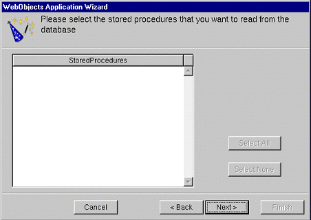

-
Choose an adaptor for your database server.
Select an adaptor for the database you want to use.
Click Next.
An adaptor is a mechanism that connects your application to a particular database server. For each type of server you use, you need a separate adaptor. WebObjects provides adaptors for several relational database servers, such as OpenBase Lite, Informix, Oracle, and Sybase servers as well as the source code for a flat-file database adaptor. If you're working on a Windows platform, WebObjects also provides an ODBC adaptor for use with ODBC-compliant database sources. It also provides the source code from which you can build an adaptor for a flat-file database.
All adaptors expect you to specify the database to use. In addition, before you can gain access to the database, you must log in. Different databases require different login information, so each database's login panel looks different. This tutorial uses the single-user OpenBase Lite adaptor for of the Movies database that is pre-installed with Enterprise Objects Framework.
-
Log into your chosen database server.
Select the Movies database.
Log into the database, filling in any required information.
Note:
If you are using the pre-installed OpenBase Lite database, click Browse, browse to the /Local/Library/Databases/Movies.db file (\Apple\Local\Library\Databases\Movies.db on Windows NT) and click Open. The filename now appears in the Database field.
Related Concepts:
Note to Oracle Users
After you log in, the wizard uses the selected adaptor to read the data dictionary (that is, schema information) from the database. From this dictionary it creates a default model, but before it does it lets you configure that model in four different ways.
-
Choose options for the creation of your model.
Make sure every option is checked except "Use Custom Enterprise objects".
The basic model the wizard creates contains entities, attributes, and relationships. How complete this model is depends on how completely the schema information is inside your database server. For example, the wizard includes relationships in your model only if the server's schema information specifies foreign key definitions.
Using the options in this page, you can supplement the basic model with additional information. (Note that the wizard doesn't modify the underlying database.) The following sections describe each option:
Assign primary keys to all entities
Enterprise Objects Framework uses primary keys as unique identifiers of enterprise objects with which it maps these objects to the appropriate database row. Therefore, you must assign a primary key to each entity you use in your application. The wizard automatically assigns primary keys to the model if it finds primary-key information in the database's schema information. Checking this box causes the wizard later on to prompt you to choose primary keys if they aren't defined in the database's schema information.
Ask about relationships
If there are foreign-key definitions in the database's schema information, the wizard includes the corresponding relationships in the basic model. However, a definition in the schema information might not provide enough information for the wizard to set all of a relationship's options. Checking this box causes the wizard to prompt you later to provide the additional information it needs to complete the relationship configurations.
Ask about stored procedures
Checking this box causes the wizard to read stored procedures from the database's schema information, display them, and allow you to choose which to include in your model.
Use custom enterprise objects
An entity maps a table to enterprise objects by storing the name of a database table (MOVIE, for example) and the name of the corresponding enterprise object class (a Java class such as Movie). When deciding what class to associate with an entity, you have two choices: EOGenericRecord or a custom class. EOGenericRecord is a class whose instances store as key-value pairs an entity's properties and the data associated with each property. They do nothing else.
If you don't check the "Use custom enterprise objects" box, the wizard maps all your database tables to EOGenericRecord. If you do check this box, the wizard maps all your database tables to custom classes. The wizard assumes that each entity is to be represented by a custom class with the same name. For example, a table named MOVIE has an entity named Movie, whose corresponding custom class is also named Movie.
Use a custom enterprise object class only when you need to add business logic; otherwise use EOGenericRecord. Note that this option, if selected, only assigns a class name; it does not create a class. The class of an entity remains EOGenericRecord, even if EOModeler shows a different class name, until you create the "skeletal" class file and add this file to the project. You'll perform this step later using EOModeler.
-
Select the database tables to include your model.
Select the following tables: DIRECTOR, MOVIE, MOVIE_ROLE, PLOT_SUMMARY, REVIEW, STUDIO, TALENT, TALENT_PHOTO, and VOTING.
After you select the database tables for your model, the next panel displayed depends upon your database. Unless you are using a database that stores primary key information in its database server's schema information, the wizard now asks you to specify a primary key for each entity.
-
Specify the primary keys for your entities.
See the table below.
The entities in your model should have the following primary keys assigned:
|
The entity...
|
Should have the primary key attributes...
|
|
Director
|
movieId and talentId
|
|
Movie
|
movieId
|
|
MovieRole
|
movieId and talentId
|
|
PlotSummary
|
movieId
|
|
Review
|
reviewId
|
|
Studio
|
studioId
|
|
Talent
|
talentId
|
|
TalentPhoto
|
talentId
|
|
Voting
|
movieId
|
-
Specify referential integrity rules for the relationships in the model.
Select the Nullify button in each "referential integrity" window that appears.
If you're using a database that stores foreign key definitions in its database server's schema information, the wizard reads them and creates corresponding relationships in your model. (The naming convention for relationships varies according to the adaptor you're using.) The wizard now asks you to specify referential integrity rules for the relationships so it can further configure them.
<Source object> owns its <destination> objects
This option specifies that a destination object in a relationship can't exist without its source object; the source object is said to "own" the destination object or objects in the relationship. For example, consider the case of Movie's to-many relationship to MovieRoles, which it owns. When a MovieRole is removed from its Movie's array of MovieRoles, the MovieRole is deleted--deleted in memory and deleted in the database.
When <source object> is deleted
This set of options specifies what to do when the source object in a relationship is deleted.
-
Nullify. Specifies that when the source object is deleted, any reciprocal relationship that the destination object has with the source object is set to null.
-
Cascade. Specifies that when a source object is deleted, the source's destination objects should also be deleted--again, deleted in memory and correspondingly in the database.
-
Deny. Specifies that if the relationship's source (for instance, a Talent) has any destination objects (MovieRoles), then the source object can't be deleted.
-
Select the stored procedures you want to include in your model.
This panel lists the stored procedures defined in your database, with all procedures selected by default.
Click Next.
